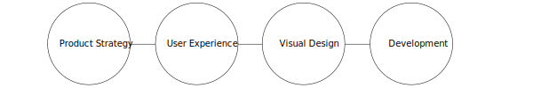

Need beautiful and functional pieces that capture attention and inspire action?
Hi I am Erin. With more than 15 years design experience and six years photography experience, as a Creative Senior Graphic Designer, I help people produce high-end design.
Whether it be brand management, identity design, publications, meetings and exhibit design, or something in between or that combines all those aspects, the end result is a stunning, workable design created through my passion about good communication and collaborating with clients.
Icon Graphic: Product Strategy; User Experience; Visual Design; Development
Together, we will enjoy meeting new challenges and utilizing my organizational skills to produce a high quality finished product. Nothing is more fulfilling than being part of a team with individuals with similar interests, and an organization that values its employees.
I believe that behind each successful product there needs to be a strong collaboration between designer and client. The designer and client must work as a team. As such, I guarantee your ideas will be heard, respected and discussed, and, if necessary, challenged and improved. By taking the time to listen to your needs and understand your goals, working together can be a stress free experience that who knows, might even turn out to be fun.
Good and plenty.
2015 Brand launch
The Actuary Magazine
Illustrations